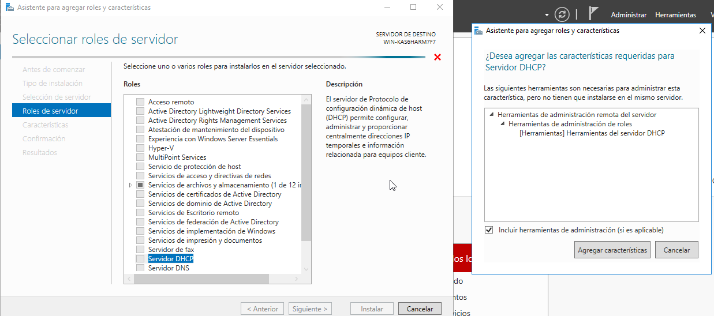

3.3. Configuración del servicio
Vamos aprender a configurar tanto los clientes (las interfaces de red que solicitan una configuración dinámica) como los servidores. En ambos casos trabajaremos con sistemas operativos Windows y Linux, con GUI y sin ella.
3.3.1. Configuración clientes
3.3.1.1. Windows
GUI
En las propiedades de la interfaz (tarjeta) de red correspondiente:
{kind=link}
Línea de comandos
En PowerShell, a través del comando Set-NetIPInterface (debemos asegurarnos de borrar las posibles direcciones estáticas que se hayan asignado a la interfaz usando el comando Remove-NetIPAddress )
PS C:\>Set-NetIPInterface -InterfaceIndex 5 -Dhcp Enabled
Si quisiéramos dejar de nuevo una configuración estática deberíamos hacer algo como lo siguiente (observa el uso de los comandos New-NetIPAddress y Set-NetIPAddress).
PS C:\> New-NetIPAddress -InterfaceIndex 5 -IPAddress 192.168.200.254
PS C:\> Set-NetIPAddress -InterfaceIndex 5 -IPAddress 192.168.200.254 -PrefixLength 24
3.3.1.2. Linux
- Netplan es el sistema de gestión de la red, sustituyendo al antiguo gestor. Puede trabajar de dos maneras (renderers):
NetworkManager (GUI)
Systemd-networkd (CLI)
GUI
Debemos asociar las tarjetas al gestor gráfico (en netplan, renderer: NetworkManager). Desde ese momento ya tenemos la gestión gráfica. Para desactivarla hay que parar el servicio network-manager.
La imagen siguiente es orientativa, la interfaz cambiará en función de la distro de Linux y de la versión de la misma.
{kind=link}
Línea de comandos
Para la configuración (a través del fichero yaml ubicado en /etc/netplan) de las tarjetas, puedes encontrar en la web muchos ejemplos de ello. Para la consulta, el up/down y la actualización de las tarjetas tenemos comandos como:
- Recargar la configuración (después de una modificación en el fichero netplan)
- Volver a solicitar la concesión de configuración al srv. DHCP
- Comprobar las direcciones de las interfaces
- Comprobar la dirección de una interfaz en concreto.
- Mostrar únicamente interfaces en funcionamiento
- Cambiar el estado de una interfaz (a veces nos ayudará a actualizar la configuración tras modificaciones en el fichero netplan)

3.3.2. Configuración servidor
3.3.2.1. Windows
GUI 1
- De manera visual a traves de la interfaz gráfica que ofrece Windows 2012/2016/2019 Server y la instalación de roles y características.
- 
{kind=link}
Puedes encontrar un ejemplo de configuración paso a paso en el siguiente video:
- Un servidor conectado a la red local del aula con la primera interfaz.
- La segunda solo visible en su propio equipo con una IP tipo C FIJA. Configuración mínima, ya que no sale a ninguna red externa con esta interfaz.
- Un servidor DHCP repartiendo dirección en su red local, sin subnetting, y pasando a los clientes como gateway y como DNS la dirección del propio servidor.
- Añadir dos tarjetas más internas al servidor (de manera que tenga una tarjeta en modo puente y tres en red interna). Dale una configuración estática a cada tarjeta interna y finalmente crea un ámbito DHCP en cada una de ellas. Cada tarjeta interna estará en una red interna distintas DHCP1, DHCP2 y DHCP3.
- Probar el funcionamiento del servidor conectando un cliente virtualizado con red interna, probando cada uno de los 3 ámbitos.
- Generar el fichero con la exportación de la configuración de tu servidor DHCP (puedes generarlo con el comando Export-DhcpServer )
Línea de comandos 2
- Instalación
Install-WindowsFeature DHCP -IncludeManagementTools
- Configuración de un ámbito y sus opciones. Un ejemplo podría ser:
Add-DhcpServerv4Scope -name "RedAula2" -StartRange 192.168.200.11 -EndRange 192.168.200.254 -SubnetMask 255.255.255.0 -State Active Set-DhcpServerv4OptionValue -ComputerName win-ts9g7n11dbe -ScopeId 192.168.200.0 -DnsServer 192.168.200.254 -Router 192.168.200.254 -Force
- Exportar/Importar configuración DHCP server a fichero de texto.
PS C:\> Export-DhcpServer -ComputerName "dhcpserver.contoso.com" -File "C:\exportdir\dhcpexport.xml" [-ScopeId 10.10.10.0,10.20.20.0] PS C:\> Import-DhcpServer -ComputerName "dhcpserver.contoso.com" -File "C:\exports\dhcpexport.xml" -BackupPath "C:\dhcpbackup\" [-ScopeId 10.10.10.0,10.20.20.0]
3.3.2.2. Linux
Se suele configurar directamente con el fichero de configuración correspondiente3, pero existen programas denominados paneles que nos permiten configurar los servidores a través de un entorno web (uno de los muchos ejemplos que existen puede ser Webmin).
En Ubuntu srv 18.04/20.04 el servidor que viene en sus repositorios es isc-dchp-server, en el que destacan 2 Ficheros de configuración a tener en cuenta:
/etc/default/isc-dhcp-server → Interfaces donde trabaja el srv dhcp
/etc/dhcp/dhcpd.conf → Configuración y def. De ámbitos
Un ejemplo sencillo de configuración de un ámbito (subnet en el fichero dhcpd.conf) podría ser:
{kind=link}
Además de gestiónar el servicio con los siguiente comandos (podemos elegir entre las dos opciones):
$sudo service isc-dhcp-server [restart|start|stop|status] $sudo systemctl [restart|start|stop|status] isc-dhcp-server.service
Puedes encontrar un ejemplo de configuración paso a paso en el siguiente video:
- Impresoras
- Servidores
- ...........
-
Inst. y configuración servidor DHCP Windows(GUI): Doc. oficial de Microsoft ↩
-
Inst. y configuración servidor DHCP Windows(PowerShell): Doc. oficial de Microsoft / comandos DHCP PowerShell: Doc. oficial de Microsoft ↩